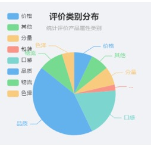

江西上高大蒜2022年第一季度电商销售白皮书
2022年第一季度，国内大蒜市场整体偏弱，受疫情影响，多地学校及单位停学停工，集团性消费的降低，下游需求减少明显，制约整体大蒜走货量。
一、
江西上高大蒜2022第一季度日消费热度和消费评价概况度
1.消费热度：每日用户评论数量起伏波动，整体消费热度为先下降至后上升。
2022年第一季度江西上高大蒜的消费热度总体呈现出先下降再上升的趋势。1月消费者总评论数量最多，2月消费者总评论量最少，1月上旬评价量在第一季度占比最高，此后评价热度有所减弱，下旬评价量增加，2月评价量急剧减少，3月评价数量又上升。 1月元旦及春节前备货对产品热度有所影响，春节假期使得2月份上旬几乎没有销量，疫情原因导致3月份销量相比1月有所下降。
2.消费评价：近期大蒜热度很低，平均每天小于1条评价。
2022年第一季度，消费者对江西上高大蒜整体非常满意，综合评分为4.43，第一季度整体消费评价处于较高水平，可见消费者对江西上高大蒜认可度较高，产品购买体验良好。
3.同期对比：同比消费热度及消费评价满意度均有所提升
对比上年同期数据可以发现，2021年第一季度的日评价密度显著减少，2022年第一季度的整体评论数量上涨明显，可见本产品市场热度相比去年同期有显著提升；从消费评价来看，相比2021年第一季度的3.62综合评分，2022年第一季度消费者总体评分更高，可见江西上高大蒜不断优化升级，获得了消费者更为满意的评价。
二、
江西上高大蒜2022年第一季度消费者整体满意度分析
1.用户满意度概况：八成以上用户持”非常满意“态度，消费者整体满意度较高
82.61%的消费者对江西上高大蒜的评价是非常满意，可见消费者对本产品的满意度和认可度较高，但有约13%的消费者对产品非常不满意或较不满意。
2.用户评价概况：品质和口感是消费者关注和评价的侧重点，其次是分量、物流、价格等因素。

42.86%的评价与品质有关，可见对于本产品，消费者对品质这一产品核心元素的感知明显，其次19.05%的评价与口感有关，再者为物流及其他因素。评价类别出现频次越高则表明消费者对其越为关注，可对高频次评价类别如品质和口感进行深入分析。
三．江西丰城大米2022年第一季度消费者对产品属性具体评价分析
1.品质：品质优良、质量上乘是消费者选择江西上高大蒜的主要因素之一
消费者消费理念的转变和饮食结构的改善，使得绿色、优质、健康新需求不断扩大，品质成为消费者选择的重要因素。在第一季度的消费者评价中，江西上高大蒜获得了75%的正面和中性评价，产品不错、质量很好是消费者对其评价的关键词。
2.口感：蒜味香浓、口感很好是江西上高大蒜的特色标签
依托优渥的自然地理条件和优质的质量把关，江西上高大蒜蒜香浓郁，辛辣可口，独具特点。在本产品2022年第一季度的评价中，所有消费者在口感这一属性上，均对江西上高大蒜给出了非常正面的评价，无一负面评价。可见江西上高大蒜在口感上备受消费者青睐。
3.物流：物流评价很高
从消费者对于江西上高大蒜物流运输评价的结果来看，本季度消费者对物流的相关评价均为正面，对商家物流服务很满意，商家也可与现有快递合作商继续合作。
4.价格：价格公道实惠才能得到长久的顾客
在价格评价中所有消费者认为其价格合适，可见本产品在消费者心中物有所值，具有性价比。
5.包装：包装实用，深受好评
产品良好的外包装能够营造品牌形象、彰显品牌价值，也体现着产品质量。消费者对江西上高大蒜的包装均给出正面评价，可见本产品在包装上能够满足消费者的期待。
四、江西上高大蒜发展建议
1. 政府建议
综合分析江西上高大蒜第一季度用户评价，可得出以下结论，①消费者对江西上高大蒜整体满意度较高，口碑较好；②大蒜消费热度在不同时期存在明显差异，与外部影响因素关联较大；③产品品质和口感是消费者评价的侧重点；④价格合适，物流好，包装不错是消费者对江西上高大蒜的普遍评价。基于此为江西上高政府在营销层面提出以下几点建议
1.1产品品质口碑良好，可积极采用社交媒体营销
（1） 政府开设起江西上高大蒜相关，或者农产品主题的官方自媒体。在微信公众号、微博、小红书、抖音、快手、B站、下厨房等热门社交平台或美食相关平台开设账号，账号中可以分享上高的大蒜种植、农田景色、淳朴农户风情、大蒜种植产业链解密等具有当地特色的内容，在第一季度的内容里可着重突出中国人的调味品大蒜，在天南地北不同地区的食用差异，例如可以做出南北对话的内容，并结合过年的淳朴乡情进行内容运营。同时可以积极借势乡村振兴、扶农助农、生态健康等话题，丰富账号内容，树立正面形象。可以引进自媒体运营方面的专业人才进行内容输出与管理，在社交媒体平台扩大江西上高大蒜的影响力，宣传上高大蒜绿色健康的功效，也增加与消费者沟通的渠道。
（2） 引导帮助江西上高的大蒜商家与社交领域达人合作，通过他们的影响力向消费者“种草“。达人选择可以是与大蒜紧密相关的，也可以是不相关但影响力大的。包括美食测评博主、美食制作博主、美食探店博主、本地有影响力的自媒体、农业博主、自然生活健康生活博主等，根据不同达人的特色进行广告植入或其他形式的商业合作，这些博主对丰城大米品质、口感的正面评价，能够积极提升树立品牌形象，让更多的消费者认识江西上高大蒜，产生购买的兴趣。在第一季度可以着重刻画产品的口感好、品质高及绿色健康，美容养颜等产品定位。
（3） 增加精准营销的力度，除了增加在社交媒体、电商平台的广告投放外，更应该分析好自己的目标群体，对其网络平台偏好深入分析，减少不必要的广告投入。比如对大蒜品质较为关注的有家庭主妇、喜爱做饭的年轻人等，不断地形成消费者画像，针对性的进行产品推广。如在下厨房APP、小红书APP以及豆瓣美食小组内精准宣传投放广告。
（4） 抓住重要的营销节点进行大力度宣传推广及营销促销，大蒜消费热度在如春节元旦等节日前销量较高，即任何中国人团圆吃饭时对大蒜的需求都比较高。因此可以在如年货节前做好产品的预热和造势，加大优惠力度等吸引消费者购买。
（5） 可以与短视频平台等进行合作，开展大蒜相关的活动，例如前段时间爆火的黑蒜初体验挑战，可以主动开展如生吃大蒜视频挑战等，联动上高大蒜推出吃多少送多少的活动，同时提高江西上高大蒜的知名度和销量。
1.2借势互联网+农产品销售新模式，积极推进电商助农
（1） 利用好传统电商与直播电商，传统电商指的是天猫、淘宝、京东、拼多多等传统主流电商平台，直播电商则是通过直播在平台上售产品
。政府可以根据江西上高大蒜不同品牌的情况指导他们在各个平台开设店铺或开设直播间，政府也可建立官方直播间、官方助农店铺。引进农产品电商运营、电商供应链人才来帮助指导各个品牌的运营。由第一季度数据可见消费者也较为重视电商购物的物流服务，基于此政府应该帮助各大品牌解决物流难题，推动大米上下游产业链合作，协助当地商家提供品质稳定、物流高效的产品，塑造产品口碑。
（2） 可以牵头当地大蒜品牌与知名电商平台和带货主播洽谈合作。可根据想塑造的品牌形象选择不同的合作对象，如果想强调产品深度和情怀，可以选择与李子柒等合作；如果想强调产品品质绿色健康等可以选择与华农兄弟等合作；如果单纯想提高销量和知名度，可以选择与如小杨哥，黑蒜姐等直播内容有趣的主播合作，借助消费者对这类直播平台与主播的喜爱，增加消费热度。
1.3深耕品牌建设，增强品牌宣传
（1） 借助大众性、权威性媒体建立品牌影响力。可以与央视纪录片《远方的家》、《航拍中国》、《风味人间》、《舌尖上的中国》等美食节目进行合作，借助有权威性的公共媒体，提升品牌知名度传播品牌特色。也可以在知名媒体或者杂志上打广告，做宣传，利用媒体平台或者知名人物背书，扩大品牌影响力。
（2） 组织拍摄江西上高大蒜主题纪录片，突出自然、淳朴、生态健康等特色，注重成片的视觉与感觉，深度挖掘品牌故事，给上高大蒜更多的品牌韵味，讲好品牌的故事。
（3） 重视品牌形象，强化logo、宣传等视觉设计。可以选择塑造产品拟人化形象，打造更加亲民的品牌，增强消费者视觉记忆的同时宣扬产品的绿色健康品质和浓郁的口感。
（4） 组织举办大蒜产品展销会。通过具有一定规模的产品推介会和展销会，汇聚全国各地各具特色的大蒜比拼交流，组织企业之间进行大蒜品质比拼、大蒜种植等方面的交流论坛活动，不断树立江西上高大蒜的独特品牌定位与大米特色，并积极与各大媒体联合，增强活动的影响力，扩大江西上高大蒜的知名度。
1.4文旅商农一体化，建设特色产业链生态
（1） 重视线下体验，打造双重口碑。积极借鉴体验式营销成功案例，为消费者提供良好的线下体验。借力江西上高当地的旅游资源和基础设施，进一步开展大蒜种植学习体验活动、大蒜种植示范基地参观活动、采摘上高大蒜活动、制作上高大蒜衍生美食等进一步拉近与消费者的距离，让消费者切实体验到江西上高大蒜的优良品质与特色，将大蒜打造成当地旅游业的特色产品。
（2） 充分利用丰城的自然资源、商旅文化资源，打造文旅商农一体化。除针对上高大蒜这一产品外，也应积极打造良好的特色产业链，包括上高芋头、上高脚板薯、上高蒙山猪等一系列地方特产，提升江西上高的知名度，同时提升当地特产的附加值和软实力。
2.平台商家建议
由2022年第一季度消费热度和消费评价可见1月江西上高大蒜市场热度显著高于2月、3月，受春节备货影响较大。3月所以消费量相比2月有所上升。综合可见春节前市场十分重要，首先，商家应充分抓住假期红利，在节前加大商品的宣传推广以及设置相应的营销促销活动，如多件打折、满减优惠，或者与油、调味品等其他相关联产品捆绑销售；其次，也需要在节前增加商品囤货，节后减少备货；由用户评价对品质和口感的重视可见，商家应着力与商家店铺及产品宣传中，打造更精致的页面，提升消费者的第一印象。
3.生产厂家建议
由用户评价概览可见品质、口感和物流是消费者关注和评价的侧重点，其中品质是评价最多的关键词，分析主要原因应该为江西上高大蒜本身作为食品或调味品，产品核心竞争力即其产品质量是消费者最关心的地方，因此对其口感和品质要求较高。基于此对于生产厂家有三点建议，其一：注重商品的品质，不断扩大品牌知名度；其二：除了大蒜本身外，可以尝试生产不同附加产品，例如醋泡大蒜，大蒜酱等，满足更多消费者的口味需求；其三：注重物流和包装，有效彰显品牌形象。
4. 消费建议
消费者在购买本产品时应重点关注其产品形态、产品详情及微量元素含量，关注平台已购消费者对于口感、分量、包装等的评价，综合判断产品品质。其次，消费者应关注产品的市场热度，怕临近节日产品价格上涨则可提前一至两周购买，关注产品节假日促销活动，增强产品购买性价比。